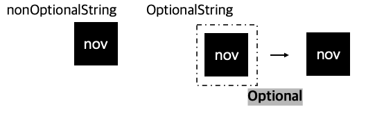

* Swift Language의 Optional Type에 대해 정리한 시리즈입니다.
* Non Optional Type과 Optional Type의 차이점에 대해 정리해 보았습니다.
* 개인적인 공부 내용을 기록하는 용도로 작성한 글이기에 잘못된 내용을 포함하고 있을 수 있습니다.
#1 nil
Swift에는 다른 일반적인 프로그래밍 언어와는 달리 Optional이라는 개념이 존재한다.
Swift 공식문서에 나와있는 Optional에 대한 소개를 읽어보면 다음과 같다.
A type that represents either a wrapped value or the absence of a value.
"Wrapped 된 값 혹은 값이 없음을 나타내는 타입"
불친절한 Siwft 공식문서 내용은 무시하고 쉽게 설명하자면 Optional Type이란 nil을 사용할 수 있는 타입이다.
nil이란 "값이 없음"을 나타내기 위한 타입이다.
Swift의 외에 다른 언어를 공부하다 넘어온 개발자는 nil = null 인가?라고 생각할 수도 있으나 그렇지는 않다.
C/Java에서의 NULL은 메모리 주소를 가리키지 않는 포인터 (C++의 경우 nullptr)이며
Swift에서의 nil은 단순히 "값이 없음"이다.
말이 길어졌는데 내용을 요약해 보자면
Swift에서 nil은 "값이 없음"을 뜻하며,
Optional Type은 nil 값을 대입할 수 있는 타입이다.
그러나 nil을 어떤 값에나 대입할 수 있는 것은 아니다.
#2 Non Optional Type vs Optional Type
Swift의 DataType은 Non Optional Type과 Optional Type으로 크게 두 가지로 구분할 수 있다.
Non Optional Type은 이름에서 유추 가능하듯이 Optional 타입이 아닌 타입으로, 우리가 일반적으로 사용하는 String, Int, Double.. 등과 같은 데이터 타입이다.
var nonOptionalString: String;
Optional Type은 데이터타입 뒤에 ? 또는 !를 붙여서 표현한다.
이번 포스팅에서는 우선 ?를 붙인 Optional을 예시로 작성해 나간다.
* ?와 !의 차이점은 추후에 따로 포스팅을 작성할 예정입니다.
var optionalString: String?
var optionalString: String!
Non Optional Type은 nil 값을 대입할 수 없으며,
반드시 초기화를 해 주어야 사용 가능하다.
아래처럼 nonOptionalString 변수를 선언만 하고 값을 대입하지 않은 상태로 변수에 접근하면 에러가 발생한다.
var nonOptionalString: String;
// nonOptionalString = nil // error - non Optional Type은 Nil 값을 대입할수 없다.
// print("nonOptionalString - \(nonOptionalString)") // error - non Optional은 초기화와 동시에 값을 가져야함.
* nonOptionalString을 선언과 동시에 "nov"로 초기화한 코드
var nonOptionalString: String = "nov"
print("nonOptionalString - \(nonOptionalString)")nonOptionalString - nov
반면 Optional Type은 nil값을 대입할 수 있으며
별도로 초기화하지 않아도 nil로 초기화되기에 바로 접근은 가능하다.
var optionalString: String?;
print("OptionalString - \(optionalString)")OptionalString - nil
Non Optional Type과 Optional Type의 차이점을 표로 정리해 보았다.
| Type | Non Optional Type | Optional Type |
| 선언 방식 | 기존 변수 선언과 동일 | 데이터 타입 뒤에 ? or ! |
| nil | 대입 불가능 | 대입 가능 |
| 초기화 | 값을 초기화 해야지만 사용 가능 | 별도로 초기화 하지 않아도 자동으로 Nil로 초기화 |
#3 String과 String? 은 다른 타입인가?
Optional에 대한 개념을 명확하게 정리하고 넘어가지 않고 바로 IOS 프로그래밍에 들어가면 다음과 같은 의문이 들 수 있다.
그래서 String 타입과 String? 타입은 다른 타입인가?
앞에서 설명했듯이 다르다.
String은 Non Optional Type인 String 타입이고,
String?은 Optional Type인 String? 타입인 것이다.
무엇보다 String에는 nil 값이 들어갈 수 없다.
아래 코드를 실행해 보면 optionalString은 "nov"가 아닌
Optional("nov")라는 값이 출력된다.
var nonOptionalString: String = "nov"
print("nonOptionalString - \(nonOptionalString)")
var optionalString: String? = "nov"
print("OptionalString - \(optionalString)")nonOptionalString - nov
OptionalString - Optional("nov")
즉 optionalString 내부에 들어있는 "nov"라는 String 값은 Optional이라는 껍데기에 의해 둘러 쌓여있는 상태라고 이해하면 된다.
따라서 optional 껍데기 내부의 "nov" 알맹이를 사용하기 위해서는 optional 껍데기를 깨 부셔야 하는데
이렇게 Optional을 벗기는 과정을 Optional unwrapping이라고 부른다.
Optional unwrapping을 여기서 설명하기엔 글이 너무 길어질 것 같아 다음 포스팅에서 자세하게 정리할 예정이다.

#4 그래서 Optional을 왜 사용하는데?
Optional이 값이 없음을 뜻하는 nil을 대입할 수 있는 타입이라는 것은 알겠는데,
그래서 굳이 Optional이라는 번거로운 개념을 사용하면서까지 Optional Type을 사용해야 하는지 의문이 들 수 있다.
그러나 Optional은 실제로 매우 빈번히 사용된다.
만약 로그인 페이지에서 사용자가 아무런 값도 입력하지 않고 로그인을 눌렀다고 상황을 가정해 보자.
그렇다면 서버로 어떤 값이 전송되어야 할까?
이럴때 값이 없음을 뜻하는 nil이 필요하다.
그러면 0이나 "" 같은 빈 문자열을 보내면 되지 않냐고 할 수 있다.
하지만 실제로 0이라는 값을 보낸 것이라면?
그리고 프로젝트에 참여하는 프로그래머에게 하나하나 알려줄 수도 없는 노릇이다.
그렇다고 빈값이니까 애플리케이션을 Kill 할 수도 없다.
Swift를 처음 배우는 입장에서는 필요 없는 기능이라고 생각할 수 있으나
실제로 IOS 개발을 진행하다 보면 예외처리 과정을 간소화해 주는 고마운 문법이라고 느낄 수 있을 것이다.
* 이어지는 포스팅 에서는 Optional Unwrapping에 대해서 설명하도록 하겠습니다.